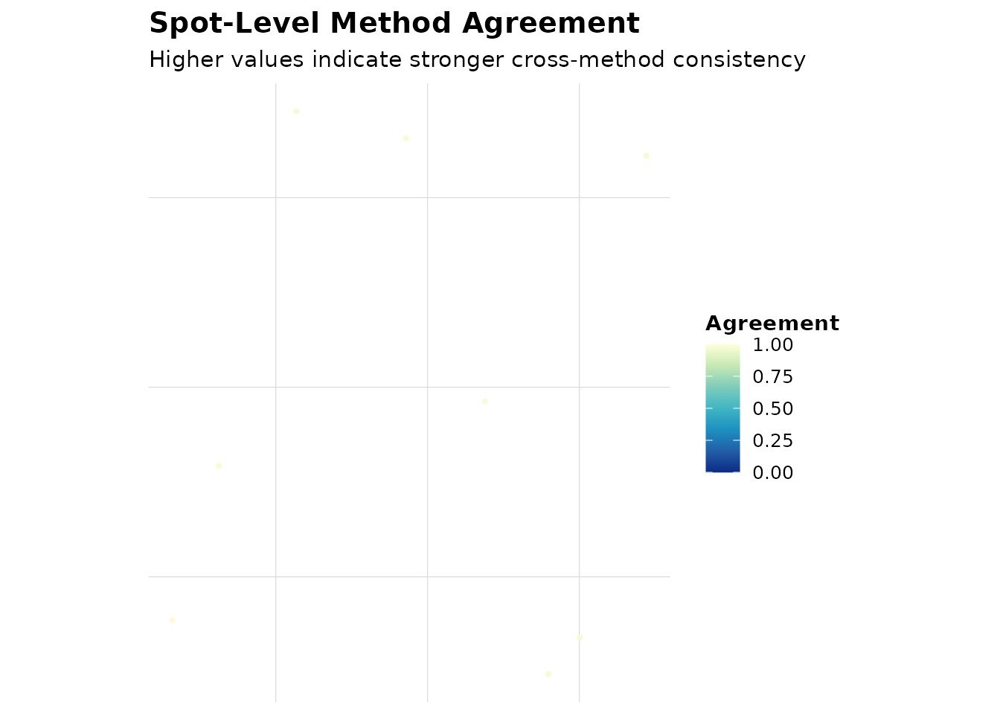
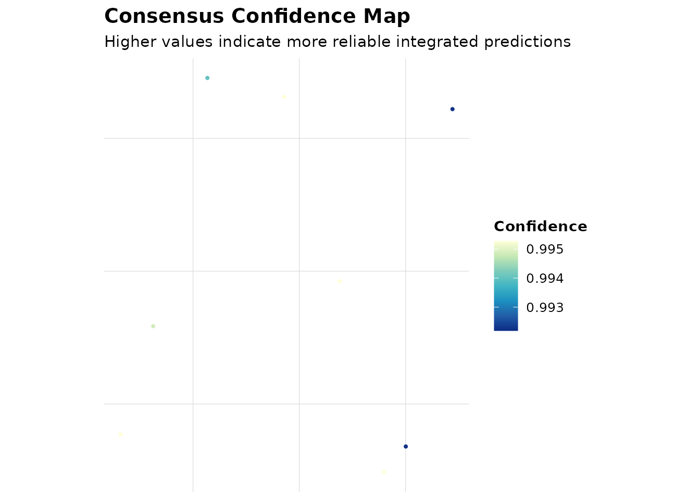
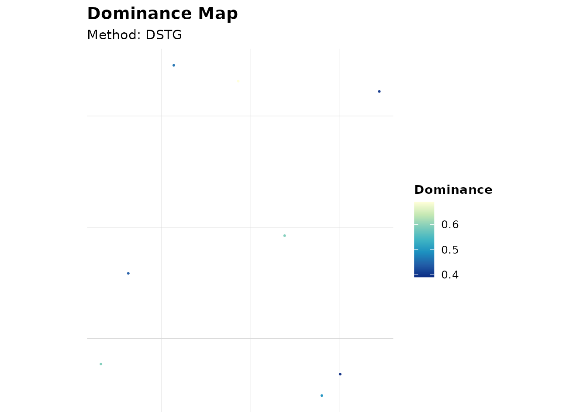
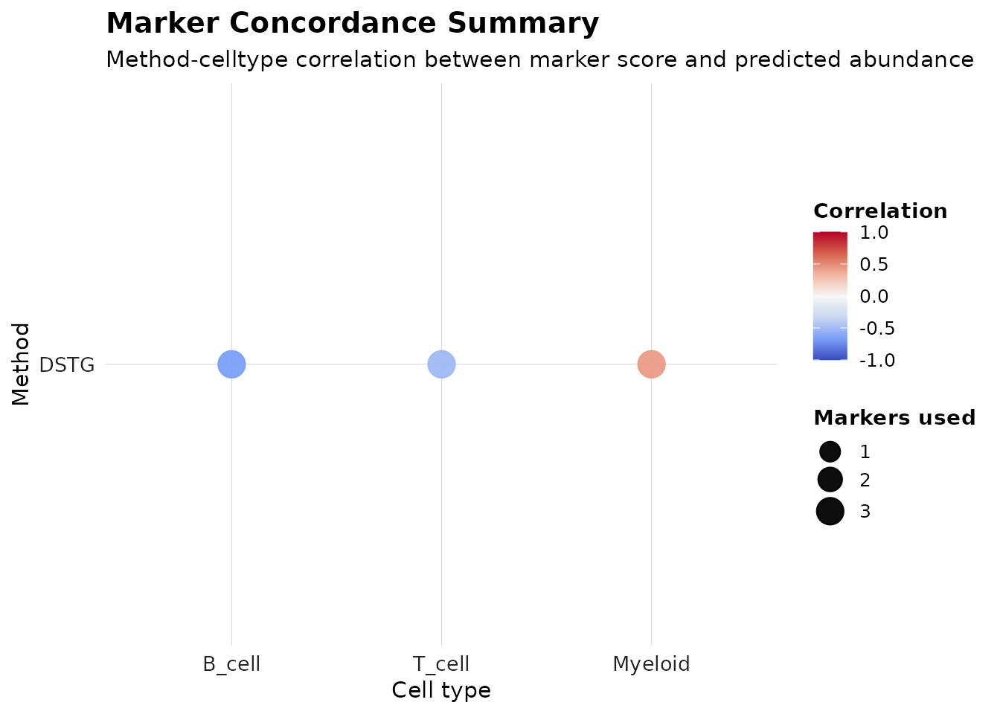
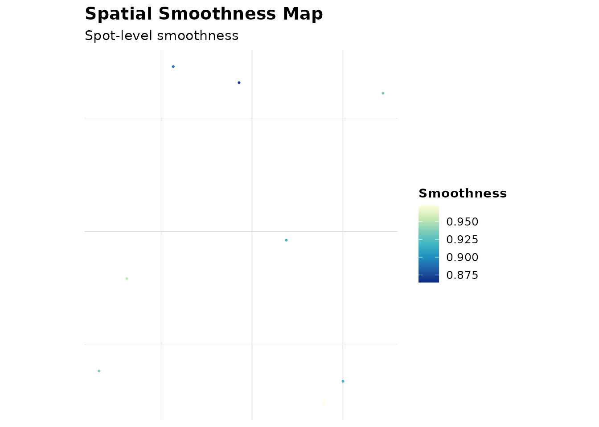
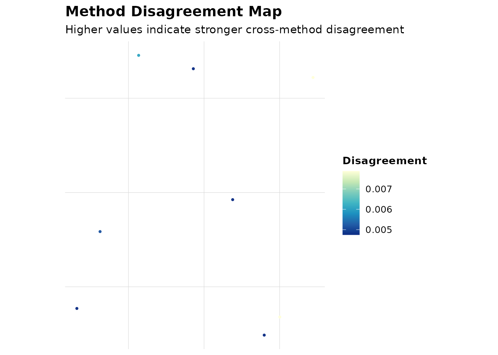

AEGIS Real Data Example (Human Lymph Node)
Source:vignettes/AEGIS-complete-tutorial.Rmd
AEGIS-complete-tutorial.RmdStep 1. Load real Human Lymph Node data
If authoritative raw files are available in your repository root, load directly:
seu <- load_10x_lymphnode(data_dir = ".")For a fully reproducible tutorial run (including CI), use the built-in object:
data("aegis_example", package = "AEGIS")
seu <- aegis_example
markers <- readRDS(system.file("extdata", "marker_list.rds", package = "AEGIS"))Step 2. Prepare exported result tables from multiple methods
spots <- colnames(seu)[1:8]
#> Loading required namespace: SeuratObject
seu_small <- suppressWarnings(seu[, spots])
#> Loading required namespace: Seurat
tmp_rctd <- tempfile(fileext = ".csv")
utils::write.csv(data.frame(
barcode = spots,
B_cell = c(0.50, 0.20, 0.40, 0.30, 0.10, 0.20, 0.40, 0.50),
T_cell = c(0.30, 0.60, 0.40, 0.40, 0.70, 0.60, 0.30, 0.30),
Myeloid = c(0.20, 0.20, 0.20, 0.30, 0.20, 0.20, 0.30, 0.20),
check.names = FALSE
), tmp_rctd, row.names = FALSE)
tmp_spotlight <- tempfile(fileext = ".tsv")
utils::write.table(data.frame(
spot_id = spots,
B_cell = c(0.40, 0.30, 0.50, 0.30, 0.20, 0.30, 0.40, 0.40),
T_cell = c(0.40, 0.50, 0.30, 0.40, 0.60, 0.50, 0.40, 0.30),
Myeloid = c(0.20, 0.20, 0.20, 0.30, 0.20, 0.20, 0.20, 0.30),
sample = "S1",
check.names = FALSE
), tmp_spotlight, sep = "\t", quote = FALSE, row.names = FALSE)
tmp_cell2location <- tempfile(fileext = ".csv")
utils::write.csv(data.frame(
spot = spots,
B_cell = c(15, 8, 12, 10, 5, 7, 9, 11),
T_cell = c(12, 18, 10, 13, 20, 16, 12, 10),
Myeloid = c(5, 6, 4, 8, 5, 7, 6, 9),
x = seq_along(spots),
y = rev(seq_along(spots)),
check.names = FALSE
), tmp_cell2location, row.names = FALSE)
tmp_card <- tempfile(fileext = ".csv")
utils::write.csv(data.frame(
spot_id = spots,
B_cell = c(0.55, 0.25, 0.45, 0.35, 0.15, 0.25, 0.35, 0.45),
T_cell = c(0.30, 0.55, 0.35, 0.40, 0.65, 0.55, 0.45, 0.35),
Myeloid = c(0.15, 0.20, 0.20, 0.25, 0.20, 0.20, 0.20, 0.20),
check.names = FALSE
), tmp_card, row.names = FALSE)
tmp_spatialdwls <- tempfile(fileext = ".tsv")
utils::write.table(data.frame(
barcode = spots,
B_cell = c(0.50, 0.25, 0.40, 0.35, 0.10, 0.20, 0.35, 0.45),
T_cell = c(0.30, 0.55, 0.35, 0.40, 0.70, 0.60, 0.45, 0.35),
Myeloid = c(0.20, 0.20, 0.25, 0.25, 0.20, 0.20, 0.20, 0.20),
sample = "S1",
check.names = FALSE
), tmp_spatialdwls, sep = "\t", quote = FALSE, row.names = FALSE)
tmp_stereoscope <- tempfile(fileext = ".csv")
utils::write.csv(data.frame(
spot_id = spots,
B_cell = c(0.48, 0.22, 0.38, 0.32, 0.12, 0.22, 0.32, 0.42),
T_cell = c(0.32, 0.58, 0.37, 0.43, 0.68, 0.58, 0.48, 0.36),
Myeloid = c(0.20, 0.20, 0.25, 0.25, 0.20, 0.20, 0.20, 0.22),
check.names = FALSE
), tmp_stereoscope, row.names = FALSE)
tmp_destvi <- tempfile(fileext = ".csv")
utils::write.csv(data.frame(
barcode = spots,
B_cell = c(20, 8, 12, 9, 5, 7, 8, 10),
T_cell = c(10, 18, 11, 13, 20, 17, 12, 9),
Myeloid = c(4, 6, 5, 7, 4, 6, 5, 8),
check.names = FALSE
), tmp_destvi, row.names = FALSE)
tmp_tangram <- tempfile(fileext = ".tsv")
utils::write.table(data.frame(
cell_id = spots,
B_cell = c(0.52, 0.24, 0.42, 0.34, 0.14, 0.24, 0.34, 0.46),
T_cell = c(0.28, 0.56, 0.34, 0.42, 0.66, 0.56, 0.46, 0.34),
Myeloid = c(0.20, 0.20, 0.24, 0.24, 0.20, 0.20, 0.20, 0.20),
check.names = FALSE
), tmp_tangram, sep = "\t", quote = FALSE, row.names = FALSE)
tmp_stdec <- tempfile(fileext = ".csv")
utils::write.csv(data.frame(
spot = spots,
topic1 = c(0.60, 0.30, 0.40, 0.50, 0.20, 0.30, 0.40, 0.50),
topic2 = c(0.40, 0.70, 0.60, 0.50, 0.80, 0.70, 0.60, 0.50),
check.names = FALSE
), tmp_stdec, row.names = FALSE)
tmp_dstg <- tempfile(fileext = ".csv")
utils::write.csv(data.frame(
barcode = spots,
B_cell = c(0.46, 0.21, 0.36, 0.31, 0.11, 0.21, 0.31, 0.40),
T_cell = c(0.34, 0.59, 0.39, 0.44, 0.69, 0.59, 0.49, 0.38),
Myeloid = c(0.20, 0.20, 0.25, 0.25, 0.20, 0.20, 0.20, 0.22),
check.names = FALSE
), tmp_dstg, row.names = FALSE)
tmp_stride <- tempfile(fileext = ".csv")
utils::write.csv(data.frame(
spot = spots,
B_cell = c(0.47, 0.23, 0.39, 0.33, 0.13, 0.23, 0.33, 0.43),
T_cell = c(0.33, 0.57, 0.36, 0.43, 0.67, 0.57, 0.47, 0.35),
Myeloid = c(0.20, 0.20, 0.25, 0.24, 0.20, 0.20, 0.20, 0.22),
confidence = c(0.90, 0.88, 0.87, 0.89, 0.91, 0.86, 0.88, 0.90),
check.names = FALSE
), tmp_stride, row.names = FALSE)Step 3. Import all supported adapters
rctd <- read_rctd(tmp_rctd)
spotlight <- read_spotlight(tmp_spotlight)
cell2location <- read_cell2location(tmp_cell2location)
#> Warning: cell2location: dropped likely metadata numeric columns: x, y
card <- read_card(tmp_card)
spatialdwls <- read_spatialdwls(tmp_spatialdwls)
stereoscope <- read_stereoscope(tmp_stereoscope)
destvi <- read_destvi(tmp_destvi)
tangram <- read_tangram(tmp_tangram)
stdeconvolve <- read_stdeconvolve(tmp_stdec)
dstg <- read_dstg(tmp_dstg)
stride <- read_stride(tmp_stride)
#> Warning: STRIDE: dropped likely metadata numeric columns: confidence
generic <- read_deconv_table(tmp_stereoscope, method = "generic")
adapter_overview <- data.frame(
method = c("RCTD", "SPOTlight", "cell2location", "CARD", "SpatialDWLS", "stereoscope", "DestVI", "Tangram", "STdeconvolve", "DSTG", "STRIDE", "generic"),
n_spots = c(nrow(rctd), nrow(spotlight), nrow(cell2location), nrow(card), nrow(spatialdwls), nrow(stereoscope), nrow(destvi), nrow(tangram), nrow(stdeconvolve), nrow(dstg), nrow(stride), nrow(generic)),
n_celltypes = c(ncol(rctd), ncol(spotlight), ncol(cell2location), ncol(card), ncol(spatialdwls), ncol(stereoscope), ncol(destvi), ncol(tangram), ncol(stdeconvolve), ncol(dstg), ncol(stride), ncol(generic))
)
knitr::kable(adapter_overview)| method | n_spots | n_celltypes |
|---|---|---|
| RCTD | 8 | 3 |
| SPOTlight | 8 | 3 |
| cell2location | 8 | 3 |
| CARD | 8 | 3 |
| SpatialDWLS | 8 | 3 |
| stereoscope | 8 | 3 |
| DestVI | 8 | 3 |
| Tangram | 8 | 3 |
| STdeconvolve | 8 | 2 |
| DSTG | 8 | 3 |
| STRIDE | 8 | 3 |
| generic | 8 | 3 |
Step 4. Build a comparison object including all supported methods
deconv_all <- list(
RCTD = align_deconv_to_seurat(rctd, seu_small),
SPOTlight = align_deconv_to_seurat(spotlight, seu_small),
cell2location = align_deconv_to_seurat(cell2location, seu_small),
CARD = align_deconv_to_seurat(card, seu_small),
SpatialDWLS = align_deconv_to_seurat(spatialdwls, seu_small),
stereoscope = align_deconv_to_seurat(stereoscope, seu_small),
DestVI = align_deconv_to_seurat(destvi, seu_small),
Tangram = align_deconv_to_seurat(tangram, seu_small),
STdeconvolve = align_deconv_to_seurat(stdeconvolve, seu_small),
DSTG = align_deconv_to_seurat(dstg, seu_small),
STRIDE = align_deconv_to_seurat(stride, seu_small)
)
obj_all <- as_aegis(seu_small, deconv = deconv_all, markers = markers)Step 5. Run audit and comparison on all methods
obj_all <- audit_basic(obj_all)
obj_all <- audit_marker(obj_all)
obj_all <- audit_spatial(obj_all)
obj_all <- compare_methods(obj_all)
obj_all <- score_methods(obj_all)
knitr::kable(obj_all$audit$basic$summary)| method | n_spots | n_celltypes | zero_fraction | near_zero_fraction | mean_dominance | mean_entropy | mean_n_detected_types | mean_sum_dev |
|---|---|---|---|---|---|---|---|---|
| RCTD | 8 | 3 | 0 | 0 | 0.5125000 | 0.9992982 | 3 | 0 |
| SPOTlight | 8 | 3 | 0 | 0 | 0.4625000 | 1.0408587 | 3 | 0 |
| cell2location | 8 | 3 | 0 | 0 | 0.4904068 | 1.0158112 | 3 | 0 |
| CARD | 8 | 3 | 0 | 0 | 0.5062500 | 1.0102583 | 3 | 0 |
| SpatialDWLS | 8 | 3 | 0 | 0 | 0.5062500 | 1.0046721 | 3 | 0 |
| stereoscope | 8 | 3 | 0 | 0 | 0.5037500 | 1.0099437 | 3 | 0 |
| DestVI | 8 | 3 | 0 | 0 | 0.5167843 | 0.9951021 | 3 | 0 |
| Tangram | 8 | 3 | 0 | 0 | 0.5075000 | 1.0133763 | 3 | 0 |
| STdeconvolve | 8 | 2 | 0 | 0 | 0.6250000 | 0.6409325 | 2 | 0 |
| DSTG | 8 | 3 | 0 | 0 | 0.5062500 | 1.0053414 | 3 | 0 |
| STRIDE | 8 | 3 | 0 | 0 | 0.5000000 | 1.0147017 | 3 | 0 |
Step 6. Rank methods (RRA and mean-rank meta style)
obj_rra <- rank_methods(obj_all, method = "rra")
obj_meta <- rank_methods(obj_all, method = "mean_rank")
rra_cols <- intersect(
c("method", "overall_rank", "overall_score", "rra_pvalue", "aggregation_used", "recommendation"),
colnames(obj_rra$consensus$method_ranking)
)
meta_cols <- intersect(
c("method", "overall_rank", "overall_score", "aggregation_used", "recommendation"),
colnames(obj_meta$consensus$method_ranking)
)
rra_tbl <- obj_rra$consensus$method_ranking[, rra_cols, drop = FALSE]
meta_tbl <- obj_meta$consensus$method_ranking[, meta_cols, drop = FALSE]
best_method <- meta_tbl$method[[1]]
best_label <- meta_tbl$recommendation[[1]]
marker_methods <- unique(obj_meta$audit$marker$concordance$method)
if (!(best_method %in% marker_methods)) {
candidate_methods <- meta_tbl$method[meta_tbl$method %in% marker_methods]
if (length(candidate_methods) > 0L) {
best_method <- candidate_methods[[1]]
}
}
knitr::kable(rra_tbl, digits = 4, caption = "RRA ranking result")| method | overall_rank | overall_score | rra_pvalue | aggregation_used | recommendation | |
|---|---|---|---|---|---|---|
| 1 | RCTD | 1.0 | 0.7567 | 0.1751 | rra | preferred |
| 6 | stereoscope | 2.0 | 0.4509 | 0.3541 | rra | preferred |
| 2 | SPOTlight | 3.0 | 0.2117 | 0.6142 | rra | preferred |
| 4 | CARD | 4.5 | 0.0042 | 0.9904 | rra | acceptable |
| 10 | DSTG | 4.5 | 0.0042 | 0.9904 | rra | acceptable |
| 3 | cell2location | 8.5 | 0.0000 | 1.0000 | rra | use_with_caution |
| 5 | SpatialDWLS | 8.5 | 0.0000 | 1.0000 | rra | use_with_caution |
| 7 | DestVI | 8.5 | 0.0000 | 1.0000 | rra | use_with_caution |
| 8 | Tangram | 8.5 | 0.0000 | 1.0000 | rra | use_with_caution |
| 9 | STdeconvolve | 8.5 | 0.0000 | 1.0000 | rra | use_with_caution |
| 11 | STRIDE | 8.5 | 0.0000 | 1.0000 | rra | use_with_caution |
knitr::kable(meta_tbl, digits = 4, caption = "Mean-rank (meta-style) result")| method | overall_rank | overall_score | aggregation_used | recommendation | |
|---|---|---|---|---|---|
| 10 | DSTG | 3.875 | -3.875 | mean_rank | preferred |
| 11 | STRIDE | 4.250 | -4.250 | mean_rank | preferred |
| 6 | stereoscope | 4.375 | -4.375 | mean_rank | preferred |
| 8 | Tangram | 5.000 | -5.000 | mean_rank | preferred |
| 2 | SPOTlight | 5.500 | -5.500 | mean_rank | acceptable |
| 5 | SpatialDWLS | 5.750 | -5.750 | mean_rank | acceptable |
| 4 | CARD | 6.000 | -6.000 | mean_rank | acceptable |
| 1 | RCTD | 6.750 | -6.750 | mean_rank | acceptable |
| 3 | cell2location | 7.250 | -7.250 | mean_rank | use_with_caution |
| 7 | DestVI | 7.500 | -7.500 | mean_rank | use_with_caution |
| 9 | STdeconvolve | 8.500 | -8.500 | mean_rank | use_with_caution |
best_method
#> [1] "DSTG"
best_label
#> [1] "preferred"Step 7. Integrate methods into weighted consensus
STdeconvolve uses latent topic labels
(topic1, topic2) and is kept in the
comparison/ranking table. For integrated cell-type consensus, we use
methods with shared cell-type labels.
consensus_methods <- setdiff(names(deconv_all), "STdeconvolve")
obj_consensus <- as_aegis(
seu_small,
deconv = deconv_all[consensus_methods],
markers = markers
)
obj_consensus <- audit_basic(obj_consensus)
obj_consensus <- audit_marker(obj_consensus)
obj_consensus <- audit_spatial(obj_consensus)
obj_consensus <- compare_methods(obj_consensus)
obj_consensus <- score_methods(obj_consensus)
obj_consensus <- rank_methods(obj_consensus, method = "mean_rank")
obj_consensus <- compute_consensus(obj_consensus, strategy = "weighted", top_n = 3)
obj_consensus$consensus$result$methods_used
#> [1] "DSTG" "STRIDE" "stereoscope"Step 8. Visualization (plot_compare and related functions)
plot_compare(obj_meta, type = "heatmap")
plot_compare(obj_meta, type = "spot_agreement")
plot_compare(obj_consensus, type = "consensus_map")
plot_audit(obj_meta, type = "dominance", method = best_method)
plot_audit(obj_meta, type = "marker", method = best_method)
plot_audit(obj_meta, type = "smoothness", method = best_method)
plot_method_ranking(obj_meta)
plot_disagreement_map(obj_consensus)
plot_consensus_confidence(obj_consensus)
Step 9. Render single-sample report
render_report(obj_consensus, output_file = "aegis_real_data_report.html")Step 10. Multi-sample workflow
A directory-based loader is supported for real projects:
seu_list_real <- load_10x_spatial_set(
paths = c("sample1_dir", "sample2_dir"),
sample_ids = c("sample1", "sample2")
)Reproducible example using one object split into two sections:
spots_all <- colnames(seu)
n_half <- floor(length(spots_all) / 2)
seu_list <- list(
sample1 = suppressWarnings(seu[, spots_all[seq_len(n_half)]]),
sample2 = suppressWarnings(seu[, spots_all[seq.int(n_half + 1L, length(spots_all))]])
)
deconv_nested <- list(
sample1 = simulate_deconv_results(seu_list$sample1, methods = c("RCTD", "SPOTlight"), seed = 333),
sample2 = simulate_deconv_results(seu_list$sample2, methods = c("RCTD", "SPOTlight"), seed = 444)
)
obj_multi <- as_aegis_multi(seu_list, deconv = deconv_nested, markers = markers)
obj_multi <- audit_basic(obj_multi)
obj_multi <- audit_marker(obj_multi)
obj_multi <- audit_spatial(obj_multi)
obj_multi <- compare_methods(obj_multi)
obj_multi <- score_methods(obj_multi)
obj_multi <- rank_methods(obj_multi, method = "mean_rank")
obj_multi <- compute_consensus(obj_multi, strategy = "weighted")
split_objs <- split_aegis_by_sample(obj_multi)
sample_summary <- summarize_by_sample(obj_multi)
merged_seu <- merge_spatial_seurat_list(seu_list, sample_ids = c("sample1", "sample2"))
#> Warning: Key 'slice1_' taken, using 'slice12_' instead
length(split_objs)
#> [1] 2
nrow(sample_summary)
#> [1] 4
ncol(merged_seu)
#> [1] 1200
knitr::kable(sample_summary)| sample_id | n_spots | method | methods_available | mean_dominance | mean_entropy | mean_local_inconsistency | mean_spot_agreement | mean_consensus_confidence |
|---|---|---|---|---|---|---|---|---|
| sample1 | 600 | RCTD | RCTD;SPOTlight | 0.3709512 | 1.553806 | 0.0951720 | 0.9736282 | 0.9736282 |
| sample1 | 600 | SPOTlight | RCTD;SPOTlight | 0.3076496 | 1.707738 | 0.0726369 | 0.9736282 | 0.9736282 |
| sample2 | 600 | RCTD | RCTD;SPOTlight | 0.3767248 | 1.546486 | 0.0933078 | 0.9737247 | 0.9737247 |
| sample2 | 600 | SPOTlight | RCTD;SPOTlight | 0.3146903 | 1.688583 | 0.0737592 | 0.9737247 | 0.9737247 |
render_report_batch(obj_multi, output_dir = "reports")This tutorial shows the real-data style pathway with explicit step-by-step calls and no custom helper functions.